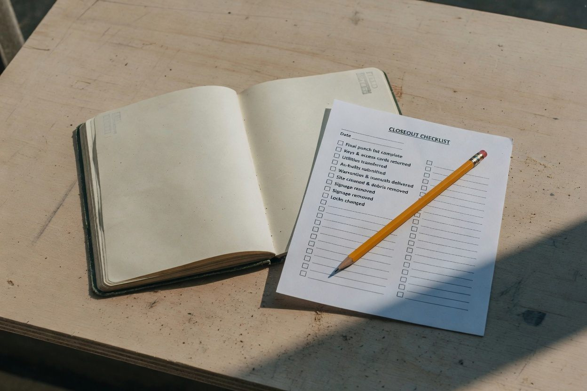

Field Notes
Notes on what is still open after the work is done.
Change orders, extra work, retainage, closeout, and the records that connect them.

The work is complete. What is still commercially open?
Change work, T&M support, billing, retainage, and the final balance after the field is finished.
Read field noteUnpaid Change Orders: What to Review Before Writing Them Off
An unpaid change order is not one problem. Find where the item stopped.
Read field noteUnbilled Change Work: Finding the Break Between the Field and Billing
Extra work can be real and documented and still miss the final account. Trace the handoff.
Read field noteConstruction Retainage: What to Reconcile When Final Money Is Still Outstanding
Separate the retainage balance from the condition that is holding it.
Read field noteConstruction Project Closeout: The Commercial Questions to Answer Before Archiving the File
Physical completion and commercial completion are not the same event. Reconcile the final account before the file is put away.
Read field noteWhat Is a Construction Change Order Audit?
Compare what happened in the work with what reached the commercial and financial record. In this note, audit means that reconciliation, not an accounting audit.
Read field note